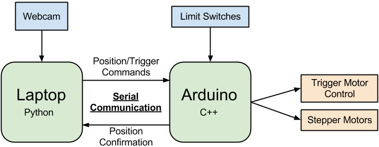

Software
Architecture
The software driving the turret is broken into two major parts: the computer vision processing running on a laptop and the motor driving firmware running on an Arduino. The laptop code processes frames from the webcam, determines the direction to move the marker, and sends commands to the arduino. The Arduino code initializes the marker position to synchronize with the laptop, and commands the pan, tilt, and trigger motors based on the messages it receives over the serial port.
Computer Vision Processing (Python)
Our Python code is composed of a few components. After setting up a serial connection with the Arduino utilizing the PySerial Python library, the script sends a command to reset the Arduino - ensuring that the laptop and Arduino start off synced. The script then blocks until it receives a message from the Arduino with the number of horizontal and vertical steps the marker should make. This marks the completion of the marker initialization, triggering the image processing loop to begin.
The tracking loop begins by taking a frame from the webcam utilizing the SimpleCV Python library. The frame is then filtered by finding the color distance from the specified color and blurring the resulting grayscale image, allowing us to find bright blobs within the image through edge detection. By convolving a circular mask, we determine which blobs are circular. These steps, implemented through a few SimpleCV method calls, yields a list of all red circles in the image.
Once a target is found, the script calculates the direction from the current position towards the target and encodes a 5 bit message to the Arduino. The message includes 1 bit for each of X enable, X direction, Y enable, Y direction, and trigger enable. The script sends the command over serial, updates its record of the marker’s position, and then waits to receive a message from the Arduino. The message confirms that the motor movements have been made to ensure that the marker position tracking cannot move faster than the motors on the turret.
Arduino Motor Control (C++)
The Arduino directly controls the motor movements of the turret. When the system is turned on, an initialization routine rotates the pan surface to the right, tilts the marker down, then tests the other directions. Upon completion the Arduino sends the number of motor steps taken in each direction to the laptop over the serial communication. This initialization calibrates the software to automatically account for a change in the range of motion of the turret and also guarantees that the image processing knows the starting position of the turret.
After initialization, the Arduino enters the tracking loop, where it constantly checks the safety state. If any limit switch is hit (or if the dead man switch is released) the Arduino will do nothing. If the system is in a safe state, the Arduino will check the serial queue for commands. If a command is present, the Arduino will parse the 5 bit command and step the motors in the requested directions. It will also cause a trigger cycle if the “fire” command is present.